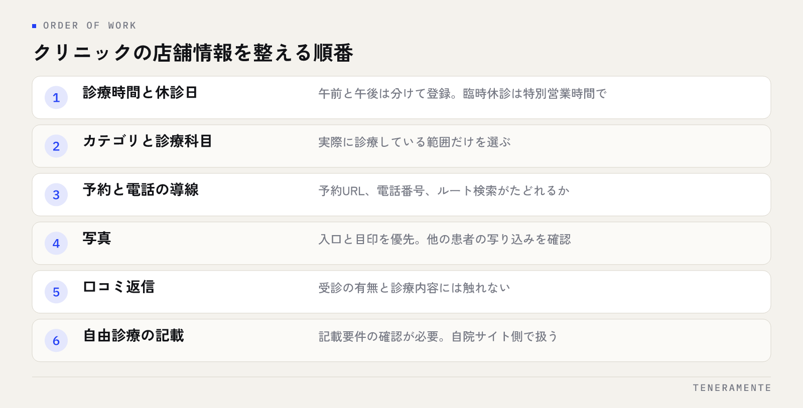

体調を崩した人が「近くの内科」「駅名＋皮膚科」と調べ、地図の一覧から1院を選ぶ。来院の判断は、この短い時間で済んでいます。クリニックのMEO対策で先に手をつけるべきは、情報を足すことより、医療広告の規制の中で書ける範囲を決めてから埋めることです。
📌 この記事の結論
患者側が一覧で見ているのは「今日診てもらえるか・何科か・どう予約するか」の3つです。この3つは規制に触れずに書ける情報なので、ここから先に埋めます。自由診療の内容や口コミへの返信は、書き方の確認が必要な領域として後に回してください。
01クリニックのMEO対策は、書ける範囲を決めてから始める
一般の店舗と医療機関で違うのは、情報の出し方に医療法の広告規制がかかる点です。Googleビジネスプロフィールに書いた内容も、医療機関が自ら発信する情報である以上、広告の考え方から外れるわけではありません。

そのため、クリニックのMEO対策は「集患に効きそうな表現を探す」作業から入ると手が止まります。先に、確認なしでそのまま書ける情報と、書き方の確認が必要な情報を分けておくほうが速いです。
分けたうえで、前者から順に埋めます。診療時間、休診日、診療科目、所在地と通院の目印、予約の方法。ここは事実をそのまま載せる領域で、迷う余地がありません。そして患者側が最初に確かめるのも、ほぼこの範囲です。
02最初に埋めるのは診療時間と休診日
最初に直すのは診療時間です。来院の判断が「今日これから診てもらえるか」で始まるためです。午前と午後で分かれている場合は、時間帯ごとに分けて登録してください。昼休みを含めて通し営業のように登録すると、閉まっている時間に来院されることになります。
あわせて設定しておきたいのが特別営業時間です。祝日、年末年始、学会や院長不在による臨時休診を日付指定で入れておくと、その日だけ別の表示になります。入れていなければ、通常の診療時間として案内され続けます。
医療機関は、急な休診が起きやすい業種です。設定の考え方は特別営業時間の設定方法にまとめているので、休診の連絡の流れとあわせて決めておくと抜けにくくなります。
年のはじめに一度まとめて入れる
祝日と年末年始の扱いを、年のはじめに一度入れておく運用が現実的です。直前に思い出して入れる形にすると、忙しい時期から順に抜けていきます。
03診療科目とカテゴリは、患者の検索語に合わせる
カテゴリは、どの検索に対して表示されるかに関わる項目です。メインカテゴリを1つ選び、実際に診療している範囲を追加カテゴリで補います。
ここで迷いやすいのが、標榜している科目と、患者が使う言葉がずれる場合です。院として「内科・消化器内科」と掲げていても、検索されるのは症状や通称であることがあります。追加カテゴリは、実際に診療している範囲であれば複数選べるので、標榜科目に対応するものを漏らさず入れてください。
一方で、診療していない科目を集患目的で入れるのは避けてください。来院後のずれが口コミとして残り、結果として判断を誤らせます。カテゴリの選び方の基本は、業種を問わずカテゴリ選定の考え方と同じです。
04自由診療を載せるときは、記載要件を先に確認する
保険診療の範囲を事実として書くことと、自由診療の内容を載せることは、扱いが変わります。自由診療について広告する場合、厚生労働省の医療広告ガイドラインでは、問い合わせ先、治療内容、費用、リスクや副作用などを併記することが求められるとされています。
地図の店舗情報は文字数が限られるため、要件を満たした説明をその場に収めるのは現実的ではありません。自由診療の詳細は自院サイトの該当ページに置き、店舗情報からはそこへ導線を引く形が無難です。
また、患者の体験談や、治療前後の写真を院の発信として載せることには制限があります。判断に迷う表現は、載せる前にガイドラインの原文を確認するか、所管の自治体の窓口に照会してください。この記事は一般的な整理であり、個別の表現の適否を保証するものではありません。
| 患者が来院前に確かめること | 埋める場所 | 書き方の確認 |
|---|---|---|
| 今日診てもらえるか | 診療時間・特別営業時間 | 事実のみ。確認は不要 |
| 何科か | カテゴリ・診療科目 | 実際に診療している範囲だけ |
| どう予約するか | 電話・予約URL・属性 | 事実のみ。確認は不要 |
| どこにあるか | 所在地・目印の写真 | 事実のみ。確認は不要 |
| 自由診療の内容と費用 | 自院サイトの該当ページ | 記載要件の確認が必要 |
05写真は、院内の設備より通院の不安を減らすものから
写真は、外観、入口、受付、待合、通院の目印の順に用意してください。初診の患者が不安に感じるのは治療の内容ではなく、建物の中のどこに入ればよいか分からないことです。
とくに効くのが入口の写真です。ビルの中にある医院では、何階のどの扉かが分からず、入口前で迷う形になります。エレベーターの位置や階数表示が写っていれば、それだけで解決します。
撮るときに注意するのは写り込みです。待合や受付の写真に他の患者が写っていないかを、公開前に必ず確認してください。診療中の様子や処置室は、患者が特定されない範囲に限ります。設備の性能を訴える写真より、通院の道筋が分かる写真を優先するほうが、来院の判断には効きます。
06口コミへの返信は、個人の診療内容に触れない
口コミは、患者が投稿した第三者の発信であり、医院が自ら出す広告とは扱いが異なるとされています。ただし、返信は医院の発信です。ここで診療の内容に踏み込むと、患者個人の受診歴に触れることになります。
厳しい内容への返信でも、「その症状であれば」「前回の処置では」といった形で具体的な診療に触れるのは避けてください。来院いただいたことへの言及と、院の方針や運用として改めた点を短く書くまでに留め、個別の内容は院内での対応に誘導する形が無難です。
返信で書かない3つ
受診の有無、診療の内容、投稿者の個人的な事情。この3つに触れずに書ける範囲で返信を組み立ててください。返信は投稿者だけでなく、これから受診を検討している人も読んでいます。
口コミの集め方そのものについてはGoogle口コミを増やす方法にまとめていますが、医療機関では依頼の仕方にも配慮が必要です。診療の場で投稿を求める形は、患者が断りにくい状況を作ります。院内の掲示や会計時の案内など、断れる形に留めてください。評価の低い投稿への向き合い方は低評価の口コミへの対応が参考になります。
07予約と電話の導線を、途切れさせない
地図から来院に至る動きは、電話をかける、予約ページを開く、ルートを調べるの3つです。この3つが店舗情報から直接たどれる状態になっているかを確認してください。
予約システムを使っている場合は、予約のURLを登録します。電話のみで受けている場合は、電話番号が正しいことと、診療時間外の案内がどうなるかを決めておいてください。地図から電話が増えると、受付の負荷も上がります。
属性の項目には、バリアフリー、駐車場、オンライン診療の可否、支払い方法といった内容が登録できます。ここは絞り込みで使われるため、埋めておくと条件から外れずに残ります。
医療機関でもMEO対策をして問題ないのでしょうか？
口コミに事実と違う内容が書かれた場合はどうすればよいですか？
分院がある場合、店舗情報は分けるべきですか？
08まとめ：月1回の確認で、整えた状態を保つ
医療機関の店舗情報は、診療時間の変更、医師の体制変更、臨時休診の追加で崩れていきます。確認は月1回、同じ項目で回すのが続けやすい形です。
見るのは、診療時間と特別営業時間、カテゴリ、予約URLと電話番号、新しい写真、未返信の口コミの5つです。担当を決めて、月初に見る運用にしてください。Googleビジネスプロフィールには、ルート検索や電話の回数が見られる画面があるので、順位が見えなくてもここが動いているかで手応えは確認できます。
クリニックのMEO対策は、診療時間 → カテゴリ → 予約と電話の導線 → 写真 → 口コミ返信の順に進めるのが、手戻りの少ない形です。自由診療の表現や効果に関わる記載は、要件を確認してから自院サイト側で扱ってください。順番を逆にすると、確認待ちで全体が止まります。
TENERAMENTEなら、この順番に沿って事実の項目を埋めたうえで、自由診療の記載をどこに置くか、口コミ返信で触れない範囲をどこに引くかまで決めた状態でお渡しします。表現の可否を毎回院内で相談し直す手間がなくなり、診療時間や体制が変わったときだけ手を入れる運用に落ち着きます。MEO対策の進め方をご覧いただいたうえで、お問い合わせからお気軽にご相談ください。